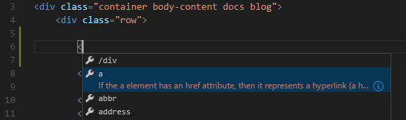

VS Code provides basic support for HTML programming out of the box. Install an extension for greater functionality.
Tip: The extensions shown above are dynamically queried. Click on an extension tile above to read the description and reviews to decide which extension is best for you. See more in the Marketplace.
IntelliSense
As you type in HTML, we offer suggestions via HTML IntelliSense. In the image below you can see a suggested HTML element closure </div> as well as a context specific list of suggested elements.

We also offer up suggestions for elements, tags, some values (as defined in HTML 5), Ionic and AngularJS tags,
You can also work with embedded CSS and JavaScript. However, note that script and style includes are not followed, the language support only looks at the content of the HTML file.
You can trigger suggestions at any time by pressing ⌃Space (Windows, Linux Ctrl+Space).
You can also control which built-in code completion providers are active. Override these in your user or workspace settings if you prefer not to see the corresponding suggestions.
|
Hover
Move the mouse over HTML tags or embedded styles and JavaScript to get more information on the symbol under the cursor.

Validation
The HTML language support performs validation on all embedded JavaScript and CSS.
You can turn that validation off with the following settings:
|
Format HTML
To improve the formatting of your HTML source code, press ⌘K ⌘F (Windows, Linux Ctrl+K Ctrl+F) and the selected area will be reformatted.
Tip: The formatter does not format the tags listed in the
html.format.unformattedsettings. Embedded JavaScript is formatted unless ‘script’ tags are excluded.Tip: Configure the HTML formatter settings in the User and Workspace Settings.
Emmet snippets
We support Emmet snippet expansion, simply press Tab.
Tip: See the HTML section of the Emmet cheat sheet for valid abbreviations.
If you’d like to use HTML Emmet abbreviations with other languages, you can associate an Emmet syntax profile (such as html, css) with other languages with the emmet.syntaxProfiles setting. The setting takes a language id and associates it with an Emmet profile.
For example, to use Emmet HTML abbreviations inside JavaScript:
|
We also support User Defined Snippets.
Next Steps
Read on to find out about:
- CSS, Less and Sass - VS Code has first class support for CSS including Less and Sass.